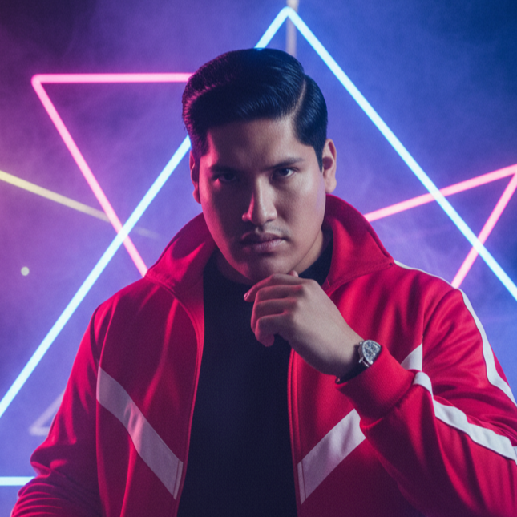

AgroPre es un sistema integral de monitoreo y automatización diseñado para optimizar el manejo de cultivos, con enfoque en la protección contra heladas y el control inteligente de plagas.
Las heladas pueden destruir cosechas enteras en horas, generando pérdidas económicas devastadoras.
Plagas como los Áfidos provocan daños progresivos difíciles de detectar a tiempo sin monitoreo.
Intervenciones manuales reactivas implican altos costos y bajo control de riesgos.
AgroPre integra sensores, visión artificial y analítica en tiempo real para transformar la gestión climática y biológica.
Sistema modular escalable con monitoreo constante, protección activa y plataforma digital centralizada.
Solicitar InformaciónTemperatura, humedad, imágenes y eventos críticos detectados automáticamente.
Actuadores activados por umbrales y modelos de detección de plagas.
Web y móvil con alertas, control remoto y registros históricos.
Reducción de agua, químicos y mano de obra mediante precisión contextual.
"Antes perdía cosecha por heladas. Con AgroPre recibo alertas y el sistema actúa. Ahora produzco con tranquilidad."
"La cooperativa ahora toma decisiones basadas en datos en tiempo real. Hemos reducido pérdidas y mejorado la coordinación."
"La integración de monitoreo, visión e intervención automática simplifica la gestión técnica de los cultivos."
Ingeniero de Software
Especialista en Python, C++ y Assembler.
Ingeniero de Software
Experto en Python, C++ y Kotlin.
Ingeniero de Software
Desarrollo de soluciones innovadoras.

Ingeniero de Software
Aplicaciones para agricultura de precisión.
Ingeniero de Software
Sistemas robustos para entornos agrícolas.
Únete a la revolución de la agricultura de precisión con UniverseThing y descubre cómo AgroPre reduce pérdidas y aumenta rentabilidad.
Solicitar una Demo